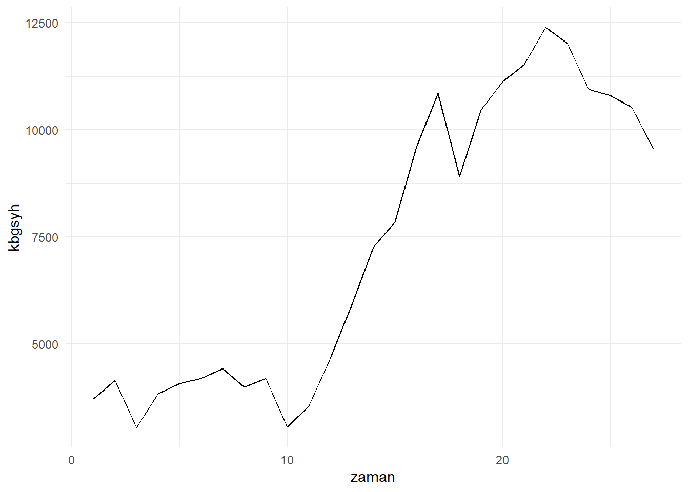
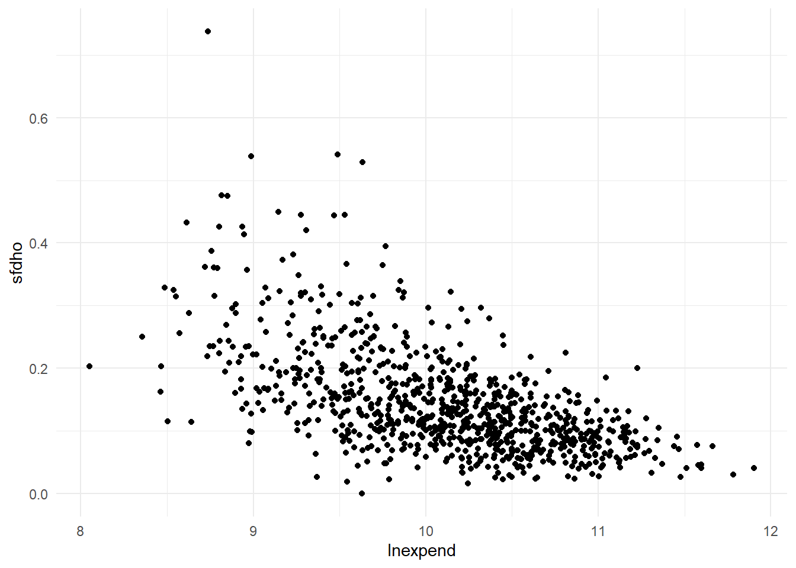
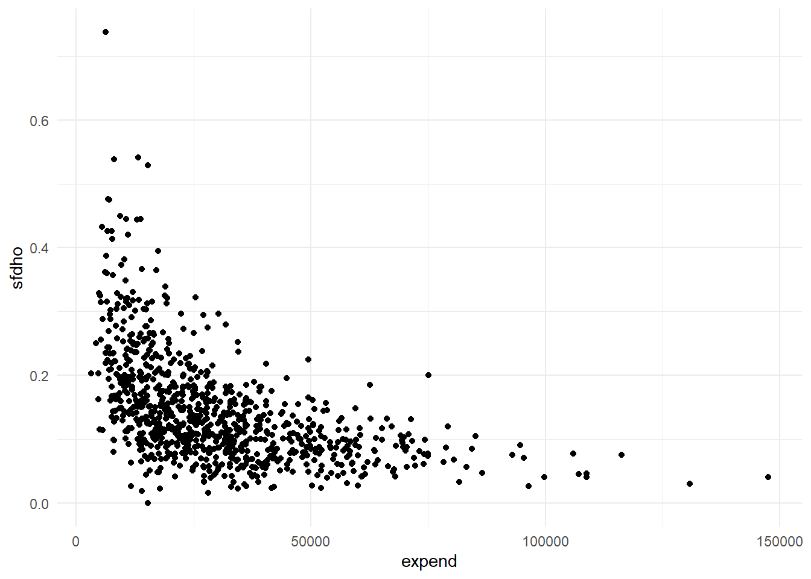
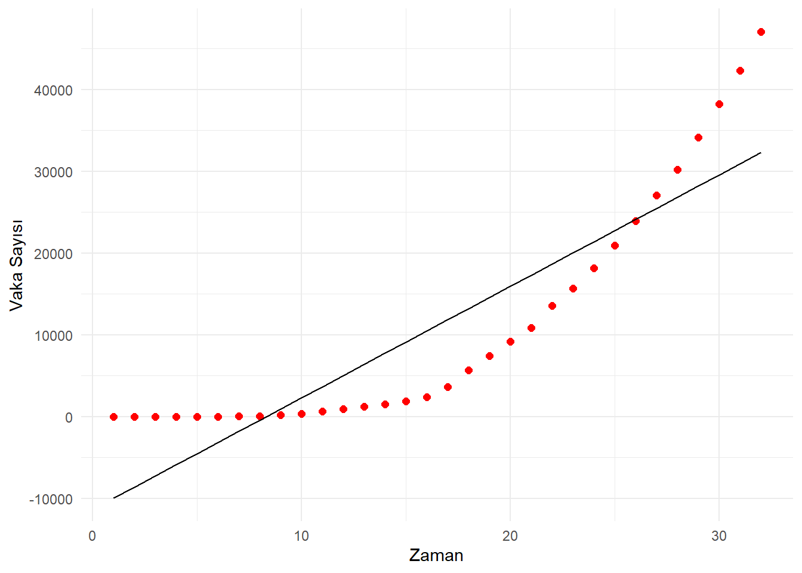
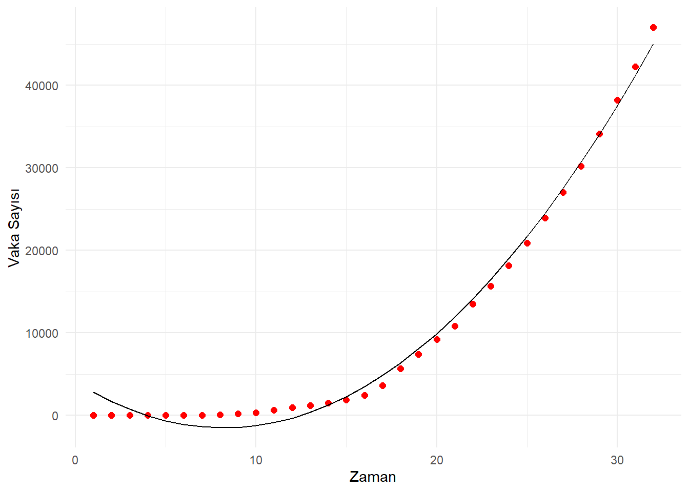
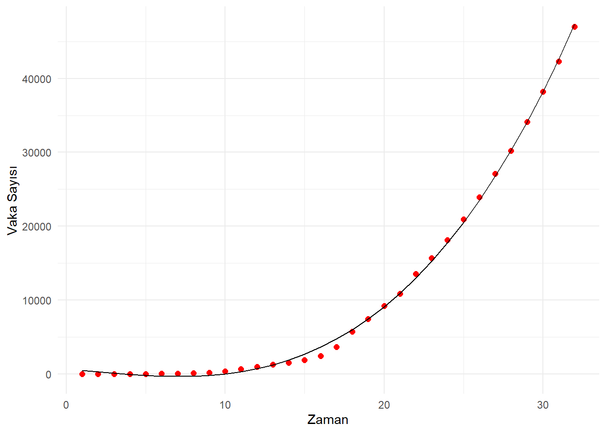
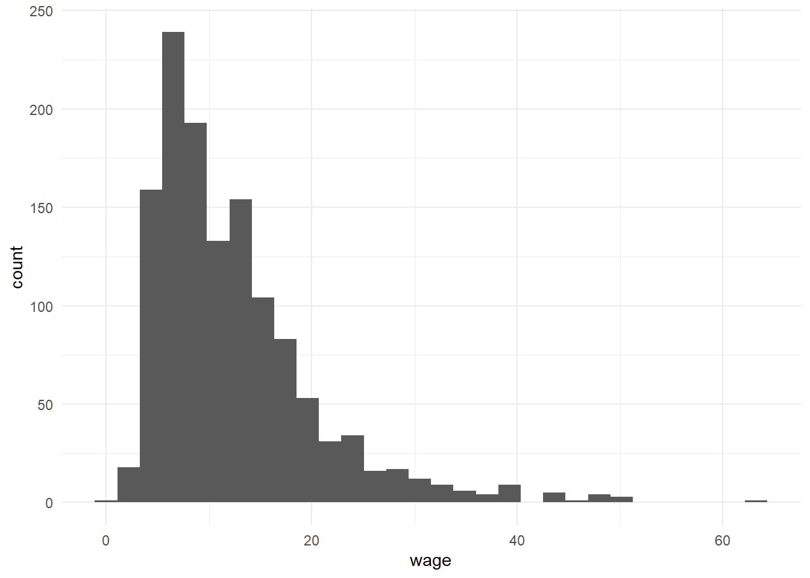
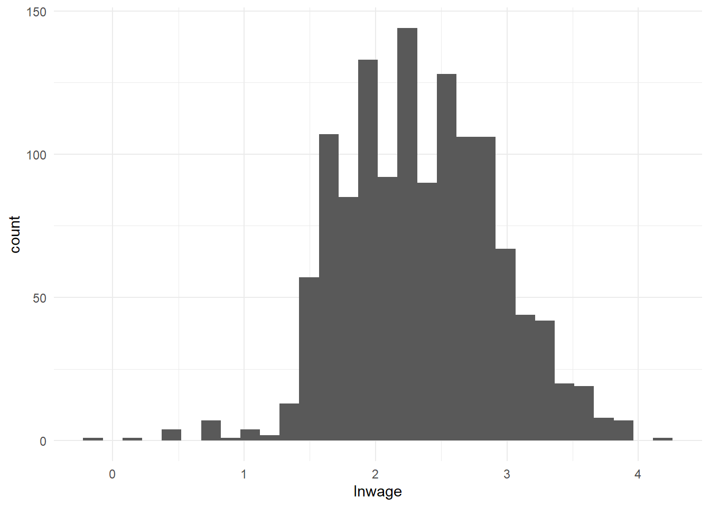

Konu 6 Değişkenleri Doğrusal Olmayan Regresyon Modelleri
Doğrusallığın tanımını şöyle yapmıştık:
Doğrusal dediğimiz zaman buradaki doğrusallığın değişkenlerden (X’ler) değil; parametrelerden (\(\beta'lar\)) geldiğini bilmemiz gerekiyor. Bağımlı ve bağımsız değişken(ler) logaritmik, tersi veya kuvveti alınmış şekilde olabilir. Bu, doğrusallık kavramını etkilemez. Asıl önemli olan \(\beta\) parametrelerinin kuvvetinin alınmaması, diğer parametrelere bölünmemesi veya dönüştürülmemesidir.
Bu başlık altında parametrelerine göre doğrusal olan ama değişkenleri açısından doğrusallık göstermeyen modellerle ilgili uygulamalar yapacağız.
library(readxl);library(tidyverse);library(magrittr);library(moments)
setwd("C:/Users/datanerd/Desktop/Github/rEkonometri/data")
df1 <- read_excel("Table1_1.xls")
df2 <- read_excel("Table2_1.xls")
df3 <- read_excel("tepav_il_gsyh_gece_isiklari.xlsx", sheet = "Kişi Başına GSYH ($) Türkiye")
df4 <- read_excel("Table2_8.xls")6.1 Log-Doğrusal ya da Çift-Log Modeller
Aşağıdaki modeli ele alalım.
\(Y_i = \beta_1X_i^{\beta_2}e^{\epsilon_i}\)
Her iki tarafın logaritmasını alırsak (log-doğrusal, çift-log);
\(lnY_i = ln\beta_1 + \beta_2lnX_i + \epsilon_i\)
ln: e tabanına göre logaritmadır.
Yukarıda bir doğrusallaştırma işlemi yaptık.
df2 %<>%
dplyr::select(output, capital, labor) %>%
mutate(lnoutput = log(output),
lncapital = log(capital),
lnlabor = log(labor)) #Her bir değişkenin logaritmasını aldık.
str(df2)## tibble [51 x 6] (S3: tbl_df/tbl/data.frame)
## $ output : num [1:51] 3.84e+07 1.81e+06 2.37e+07 2.70e+07 2.18e+08 ...
## $ capital : num [1:51] 2689076 57997 2308272 1376235 13554116 ...
## $ labor : num [1:51] 424471 19895 206893 304055 1809756 ...
## $ lnoutput : num [1:51] 17.5 14.4 17 17.1 19.2 ...
## $ lncapital: num [1:51] 14.8 11 14.7 14.1 16.4 ...
## $ lnlabor : num [1:51] 13 9.9 12.2 12.6 14.4 ...ABD için Cobb-Douglas üretim fonksiyonuna bakıyoruz.
Bağımlı değişken:
- output: İmalat sektörüne ait çıktı (katma değer, bin $)
Bağımsız değişken(ler):
capital: Sermaye girdisi (sermaye harcaması, bin $)
labor: Emek girdisi (çalışma saati, bin saat)
Modeli kurabiliriz.
##
## Call:
## lm(formula = lnoutput ~ lncapital + lnlabor, data = df2)
##
## Residuals:
## Min 1Q Median 3Q Max
## -0.45645 -0.12112 -0.05319 0.04518 1.21579
##
## Coefficients:
## Estimate Std. Error t value Pr(>|t|)
## (Intercept) 3.88760 0.39623 9.812 4.70e-13 ***
## lncapital 0.52128 0.09689 5.380 2.18e-06 ***
## lnlabor 0.46833 0.09893 4.734 1.98e-05 ***
## ---
## Signif. codes: 0 '***' 0.001 '**' 0.01 '*' 0.05 '.' 0.1 ' ' 1
##
## Residual standard error: 0.2668 on 48 degrees of freedom
## Multiple R-squared: 0.9642, Adjusted R-squared: 0.9627
## F-statistic: 645.9 on 2 and 48 DF, p-value: < 2.2e-16Çıktıya ait parametreler esnekliklerdir. Parametreleri farklı olarak şöyle yorumlayacağız: labor girdisi sabit tutulduğunda, capital girdisini %1 artırırsak output %0.52 artacaktır. Aynı şekilde capital girdisi sabit tutulduğunda, labor girdisini %1 artırırsak output %0.47 artacaktır.
p değerleri çok düşüktür. Bu da parametrelerin istatistiksel olarak anlamlı olduğu ve output üzerinde etkiye sahip olduklarını gösterir.
F ve onun p değerine bakarsak capital ve labor değişkenlerinin bir arada istatistiksel olarak anlamlı olduğunu görürüz. Bu da en az birinin output üzerinde etkisinin olduğunu gösterir.
\(R^2\) değerleri %96 ile oldukça yüksektir.
Peki, değişkenlerin logaritmasını almadan model kursaydık ne olurdu?
##
## Call:
## lm(formula = output ~ capital + labor, data = df2)
##
## Residuals:
## Min 1Q Median 3Q Max
## -9397412 -4258427 -722360 1573961 21015574
##
## Coefficients:
## Estimate Std. Error t value Pr(>|t|)
## (Intercept) 2.336e+05 1.250e+06 0.187 0.853
## capital 9.952e+00 9.781e-01 10.175 1.43e-13 ***
## labor 4.799e+01 7.058e+00 6.799 1.50e-08 ***
## ---
## Signif. codes: 0 '***' 0.001 '**' 0.01 '*' 0.05 '.' 0.1 ' ' 1
##
## Residual standard error: 6301000 on 48 degrees of freedom
## Multiple R-squared: 0.9811, Adjusted R-squared: 0.9803
## F-statistic: 1244 on 2 and 48 DF, p-value: < 2.2e-16capital ve labor parametreleri istatistiksel olarak anlamlıdır (kesme terimi hariç) fakat yorumları yukarıdaki gibi olmayacaktır.
labor girdisi sabit tutulduğunda, capital girdisindeki 1 birimlik artışın output üzerindeki ortalama etkisi 10 birimdir. capital girdisi sabit tutulduğunda, labor girdisindeki 1 birimlik artışın ise output üzerindeki ortalama etkisi 48 birimdir.
6.2 Log-Lin ya da Yarı-Logaritmik Modeller
Bu modellerde, bağımsız değişkendeki bir birim değişime karşılık bağımlı değişkendeki yüzde büyümeyi bulmak ile ilgileniriz.
## tibble [27 x 4] (S3: tbl_df/tbl/data.frame)
## $ yıllar : num [1:27] 1992 1993 1994 1995 1996 ...
## $ kbgsyh : num [1:27] 3720 4159 3048 3842 4085 ...
## $ zaman : num [1:27] 1 2 3 4 5 6 7 8 9 10 ...
## $ lnkbgsyh: num [1:27] 8.22 8.33 8.02 8.25 8.32 ...Türkiye’ye ait veriler, TEPAV’ın yaptığı 1992-2018 Dönemi için Gece Işıklarıyla İl Bazında GSYH Tahmini: 2018’de 81 İlin Büyüme Performansı başlıklı çalışmasından elde edilmiştir.

Bağımlı değişken:
- kbgsyh: Kişi Başına GSYH
Bağımsız değişken(ler):
- zaman: Zaman
Modeli kuralım.
##
## Call:
## lm(formula = lnkbgsyh ~ zaman, data = df3)
##
## Residuals:
## Min 1Q Median 3Q Max
## -0.52483 -0.13965 0.04205 0.17764 0.34329
##
## Coefficients:
## Estimate Std. Error t value Pr(>|t|)
## (Intercept) 7.984766 0.087808 90.93 < 2e-16 ***
## zaman 0.056749 0.005481 10.35 1.58e-10 ***
## ---
## Signif. codes: 0 '***' 0.001 '**' 0.01 '*' 0.05 '.' 0.1 ' ' 1
##
## Residual standard error: 0.2218 on 25 degrees of freedom
## Multiple R-squared: 0.8109, Adjusted R-squared: 0.8033
## F-statistic: 107.2 on 1 and 25 DF, p-value: 1.581e-101992-2018 döneminde Türkiye kbgsyh’sinin yıllık %5.67 büyüdüğünü söyleyebiliriz. zaman’ın p değeri oldukça düşüktür ve istatistiksel olarak anlamlıdır. Bu parametre anlık büyüme hızını verir; bileşik büyüme hızını değil. Eğer ters logaritmasını alıp 1 çıkarırsak bileşik büyüme hızına da ulaşabiliriz ki bu da %5.84’tür.
## [1] 0.05839053Kesme teriminin ters logaritmasını alırsak aşağıdaki değeri bulacağız. Bu, kbgsyh’nin başlangıç (1992 yılı) değeridir. 1992 için gerçek kbgsyh 3720 $’dır.
## [1] 2935.891## [1] 3720.399Burada doğrusal trend modeli de kurulabilirdi.
##
## Call:
## lm(formula = kbgsyh ~ zaman, data = df3)
##
## Residuals:
## Min 1Q Median 3Q Max
## -2702.26 -990.27 -25.07 1353.35 2422.91
##
## Coefficients:
## Estimate Std. Error t value Pr(>|t|)
## (Intercept) 1930.27 588.50 3.28 0.00305 **
## zaman 382.72 36.73 10.42 1.39e-10 ***
## ---
## Signif. codes: 0 '***' 0.001 '**' 0.01 '*' 0.05 '.' 0.1 ' ' 1
##
## Residual standard error: 1487 on 25 degrees of freedom
## Multiple R-squared: 0.8128, Adjusted R-squared: 0.8053
## F-statistic: 108.6 on 1 and 25 DF, p-value: 1.392e-10zaman değişkeni trend değişkendir. zaman’ın eğim parametresi birim dönemde kbgsyh’deki mutlak değişimi verir. Bu parametre pozitif ise yükselen; negatif ise azalan trend anlamını taşır.
Sonuçlar 1992-2018 yılı boyunca Türkiye’de Kişi Başına GSYH’nin yıllık 383 $ arttığını söyler. Bu da yükselen bir trend olduğunu gösterir.
6.3 Lin-Log Modeller
Bu modeller, bağımsız değişkendeki yüzde değişime karşılık bağımlı değişkendeki mutlak değişimin ölçüsü nedir sorusuna cevap verir.
df4 %<>%
dplyr::select(expend, sfdho) %>%
mutate(lnexpend = log(expend)) #Bağımsız değişkenin logaritması alındı.
str(df4)## tibble [869 x 3] (S3: tbl_df/tbl/data.frame)
## $ expend : num [1:869] 40517 33541 5182 40385 40302 ...
## $ sfdho : num [1:869] 0.1598 0.0938 0.3149 0.0596 0.0553 ...
## $ lnexpend: num [1:869] 10.61 10.42 8.55 10.61 10.6 ...ABD hanehalkı için evde tüketilen yiyecek ve alkolsüz içecekler ile toplam hanehalkı harcamasına ait verilere bakıyoruz.
Bağımlı değişken:
- sfdho: Gıda harcamasının toplam harcamadaki payı
Bağımsız değişken(ler):
- expend: Toplam hanehalkı harcaması
Modeli kuralım.
##
## Call:
## lm(formula = sfdho ~ lnexpend, data = df4)
##
## Residuals:
## Min 1Q Median 3Q Max
## -0.18180 -0.04350 -0.00654 0.03373 0.48594
##
## Coefficients:
## Estimate Std. Error t value Pr(>|t|)
## (Intercept) 0.930387 0.036367 25.58 <2e-16 ***
## lnexpend -0.077737 0.003591 -21.65 <2e-16 ***
## ---
## Signif. codes: 0 '***' 0.001 '**' 0.01 '*' 0.05 '.' 0.1 ' ' 1
##
## Residual standard error: 0.06875 on 867 degrees of freedom
## Multiple R-squared: 0.3509, Adjusted R-squared: 0.3501
## F-statistic: 468.6 on 1 and 867 DF, p-value: < 2.2e-16Tahmin edilen parametrelere ait p değerleri oldukça düşüktür ya da istatistiksel olarak anlamlıdır.
Toplam harcama %1 arttığında yiyecek ve alkolsüz içeceklerin harcamadaki payı ortalama 0.0008 birim düşecektir ama parametre -0.08? Bu modellerde doğru yorumlamak için eğim parametresi 100’e bölünür. Alternatif olarak şu yorum da yapılabilir: Toplam harcama %100 arttığında yiyecek ve alkolsüz içeceklerin harcamadaki payı 0.08 birim azalır.
6.4 Ters Modeller
Bazen bağımlı değişken ile bağımsız değişkenler arasında ters yönlü ilişki olabilir.

df4 %<>%
mutate(expend_ters = 1 / expend) #expend değişkenini 1 / expend (expend_ters) olarak çevirdik.Modeli kuralım.
##
## Call:
## lm(formula = sfdho ~ expend_ters, data = df4)
##
## Residuals:
## Min 1Q Median 3Q Max
## -0.29889 -0.04205 -0.01120 0.03229 0.44606
##
## Coefficients:
## Estimate Std. Error t value Pr(>|t|)
## (Intercept) 7.726e-02 4.012e-03 19.26 <2e-16 ***
## expend_ters 1.331e+03 6.396e+01 20.82 <2e-16 ***
## ---
## Signif. codes: 0 '***' 0.001 '**' 0.01 '*' 0.05 '.' 0.1 ' ' 1
##
## Residual standard error: 0.06968 on 867 degrees of freedom
## Multiple R-squared: 0.3332, Adjusted R-squared: 0.3325
## F-statistic: 433.3 on 1 and 867 DF, p-value: < 2.2e-16Parametreler istatistiksel olarak anlamlıdır. 0.08 olan kesme terimi, toplam harcama sonsuza gittiğinde yiyecek ve alkolsüz içecek harcamasının toplam harcamadaki payının er ya da geç %8’e yerleşeceğini belirtir. expend_ters pozitiftir. Yani, sfdho’nun toplam harcamaya göre değişim hızının her noktada negatif olacağını belirtir. Bunu grafikle gösterebiliriz.

6.5 Polinom Regresyon Modelleri
Doğrusal trend modelinde kbgsyh’nin zaman’a göre regresyonunu almıştık. Şimdi, zamanın doğrusal olmayan bir fonksiyonu olan zaman’ın karesini alacağız ve karesel fonksiyon ya da ikinci dereceden polinoma döneceğiz (Bağımsız değişkenin en büyük kuvveti ne ise polinomun derecesi odur). zaman ve zaman’ın karesi çoklu doğrusallık sorunu yaratmaz. Nedeni ise zaman’ın karesinin zamanın doğrusal olmayan bir fonksiyonu olmasıdır.
Modeli kuralım.
##
## Call:
## lm(formula = kbgsyh ~ zaman + I(zaman^2), data = df3)
##
## Residuals:
## Min 1Q Median 3Q Max
## -2744.20 -973.95 -5.67 1328.45 2442.91
##
## Coefficients:
## Estimate Std. Error t value Pr(>|t|)
## (Intercept) 1982.6577 945.0924 2.098 0.0466 *
## zaman 371.8857 155.5635 2.391 0.0250 *
## I(zaman^2) 0.3871 5.3921 0.072 0.9434
## ---
## Signif. codes: 0 '***' 0.001 '**' 0.01 '*' 0.05 '.' 0.1 ' ' 1
##
## Residual standard error: 1517 on 24 degrees of freedom
## Multiple R-squared: 0.8128, Adjusted R-squared: 0.7973
## F-statistic: 52.12 on 2 and 24 DF, p-value: 1.846e-09\(zaman^2\) dışında parametreler istatistiksel olarak anlamlıdır.
\(zaman^2\) istatistiksel olarak anlamlı olsaydı… Karesel model için kbgsyh artan bir oranda artmaktadır derdik. Çünkü zaman ve \(zaman^2\) değişkenlerinin parametre işaretleri pozitiftir.
Mesela bir de karesel trend değişkenli Log-Lin modeli kuralım.
##
## Call:
## lm(formula = lnkbgsyh ~ zaman + I(zaman^2), data = df3)
##
## Residuals:
## Min 1Q Median 3Q Max
## -0.53816 -0.13433 0.05264 0.17750 0.32788
##
## Coefficients:
## Estimate Std. Error t value Pr(>|t|)
## (Intercept) 7.9443909 0.1406236 56.494 < 2e-16 ***
## zaman 0.0651029 0.0231468 2.813 0.00964 **
## I(zaman^2) -0.0002983 0.0008023 -0.372 0.71327
## ---
## Signif. codes: 0 '***' 0.001 '**' 0.01 '*' 0.05 '.' 0.1 ' ' 1
##
## Residual standard error: 0.2257 on 24 degrees of freedom
## Multiple R-squared: 0.812, Adjusted R-squared: 0.7963
## F-statistic: 51.83 on 2 and 24 DF, p-value: 1.951e-09zaman pozitif iken \(zaman^2\) negatiftir. Bu durum kbgsyh’nin büyüme hızının pozitif olmasına rağmen azalan oranda arttığını gösterir (\(zaman^2\) istatistiksel olarak anlamlı olsaydı).
Güncel bir uygulama olarak Türkiye Covid-19 verilerini de kullanabiliriz.
zaman <- seq(1,32,1)
vaka <- c(1, 1, 5, 5, 6, 18, 47, 98, 192, 359, 670, 947, 1236, 1529, 1872, 2433, 3629, 5698, 7402, 9217, 10827, 13531, 15679, 18135, 20921, 23934, 27069, 30217, 34109, 38226, 42282, 47029) #32 günlük; 50K'ya kadar alındı.
#https://github.com/CSSEGISandData/COVID-19/blob/master/csse_covid_19_data/csse_covid_19_time_series/time_series_covid19_confirmed_global.csv
#Verilerde 947 eksikti; tamamlandı.
df <- data.frame(zaman = zaman, vaka = vaka)
model_dogrusal <- lm(formula = vaka ~ zaman, data = df)
model_kuadratik <- lm(formula = vaka ~ zaman + I(zaman^2), data = df)
model_kubik <- lm(formula = vaka ~ zaman + I(zaman^2) + I(zaman^3), data = df)Doğrusal model çıktısı:
ggplot(df, aes(x = zaman)) +
geom_point(aes(y = vaka), color = "red", size = 2) +
geom_line(aes(y = model_dogrusal$fitted.values), color = "black") +
theme_minimal() +
labs(y = "Vaka Sayısı", x = "Zaman")
##
## Call:
## lm(formula = vaka ~ zaman, data = df)
##
## Residuals:
## Min 1Q Median 3Q Max
## -8219 -5428 -1291 4853 14738
##
## Coefficients:
## Estimate Std. Error t value Pr(>|t|)
## (Intercept) -11321 2382 -4.754 4.67e-05 ***
## zaman 1363 126 10.820 7.07e-12 ***
## ---
## Signif. codes: 0 '***' 0.001 '**' 0.01 '*' 0.05 '.' 0.1 ' ' 1
##
## Residual standard error: 6579 on 30 degrees of freedom
## Multiple R-squared: 0.796, Adjusted R-squared: 0.7892
## F-statistic: 117.1 on 1 and 30 DF, p-value: 7.073e-12Zamanın karesini aldığımız kuadratik model çıktısı:
ggplot(df, aes(x = zaman)) +
geom_point(aes(y = vaka), color = "red", size = 2) +
geom_line(aes(y = model_kuadratik$fitted.values), color = "black") +
theme_minimal() +
labs(y = "Vaka Sayısı", x = "Zaman")
##
## Call:
## lm(formula = vaka ~ zaman + I(zaman^2), data = df)
##
## Residuals:
## Min 1Q Median 3Q Max
## -2799.7 -750.3 -441.7 1074.0 1978.6
##
## Coefficients:
## Estimate Std. Error t value Pr(>|t|)
## (Intercept) 4071.917 675.913 6.024 1.49e-06 ***
## zaman -1353.571 94.429 -14.334 1.08e-14 ***
## I(zaman^2) 82.317 2.776 29.652 < 2e-16 ***
## ---
## Signif. codes: 0 '***' 0.001 '**' 0.01 '*' 0.05 '.' 0.1 ' ' 1
##
## Residual standard error: 1196 on 29 degrees of freedom
## Multiple R-squared: 0.9935, Adjusted R-squared: 0.993
## F-statistic: 2212 on 2 and 29 DF, p-value: < 2.2e-16Zamanın küpünü de aldığımız kübik model çıktısı:
ggplot(df, aes(x = zaman)) +
geom_point(aes(y = vaka), color = "red", size = 2) +
geom_line(aes(y = model_kubik$fitted.values), color = "black") +
theme_minimal() +
labs(y = "Vaka Sayısı", x = "Zaman")
##
## Call:
## lm(formula = vaka ~ zaman + I(zaman^2) + I(zaman^3), data = df)
##
## Residuals:
## Min 1Q Median 3Q Max
## -1185.71 -283.69 50.53 372.47 552.33
##
## Coefficients:
## Estimate Std. Error t value Pr(>|t|)
## (Intercept) 716.1536 372.9893 1.920 0.0651 .
## zaman -219.6015 96.3840 -2.278 0.0305 *
## I(zaman^2) -2.2819 6.7314 -0.339 0.7371
## I(zaman^3) 1.7091 0.1342 12.734 3.63e-13 ***
## ---
## Signif. codes: 0 '***' 0.001 '**' 0.01 '*' 0.05 '.' 0.1 ' ' 1
##
## Residual standard error: 466.9 on 28 degrees of freedom
## Multiple R-squared: 0.999, Adjusted R-squared: 0.9989
## F-statistic: 9723 on 3 and 28 DF, p-value: < 2.2e-16Farklı farklı fonksiyon kalıplarını tanıdık. Peki, seçimi nasıl yapacağız? Gujarati, beceri ve deneyimin yanında şu maddelere de bakılabileceğini söylüyor:
Kuram, belli bir kalıbı önerebilir. Phillips eğrisi gibi.
Bağımlı değişkenin bağımsız değişkene göre eğimi hesaplanabileceği gibi esnekliği de hesaplanabilir.
Modelin parametreleri beklentileri karşılamalıdır. Araba talebinde fiyatın parametresini eksi beklemek gibi.
Bazen iki model de uygun düşebilir. Bu durumda \(R^2\) değerine bakılabilir. Fakat buna bakılırken iki modelde de bağımlı değişkenler aynı olmalıdır.
Bağımlı değişkenleri aynı olan iki model karşılaştırıldığında illa yüksek \(R^2\) değerini seçeceğiz gibi bir kural yoktur. Önemli olan kuramsal sağlamlık, tahmin edilen parametrelerin işaretleri, istatistiksel anlamlılıktır.
Bazen seçim yapmak kolay olmaz. Bu durumlarda Box-Cox dönüştürmeleri kullanılabilir.
Uygun fonksiyon yapısını bulalım.
wage değişkeninin dağılımını inceleyerek başlayalım.
df1 %<>%
dplyr::select(wage, female, nonwhite, union, education, exper)
df1 %>%
ggplot(aes(x = wage)) +
geom_histogram() +
theme_minimal()
Dağılım çarpık eğilim göstermektedir. Diğer bir ifadeyle dağılım sağa çarpıktır ve normal dağılımdan uzaktır. Bir değişkenin normal dağılıma sahip olması için skewness denilen çarpıklık parametresinin (simetrinin bir ölçüsü) 0, kurtosis denilen basıklık parametresinin (diklik veya yatıklığın bir ölçüsü) 3 olması gerekmektedir.
## [1] 1.848114## [1] 7.836566Bulduğumuz her iki değer de belirttiğimiz değerlerden farklıdır. Skewness ve kurtosis ölçülerine dayanan Jarque-Bera (J-B) istatistik ve buna ait p değeri aşağıdaki gibidir:
##
## Jarque-Bera Normality Test
##
## data: df1$wage
## JB = 1990.1, p-value < 2.2e-16
## alternative hypothesis: greaterNormal dağılmış bir değişken için skewness = 0, kurtosis = 3’tür demiştik. Dolayısıyla, J-B testi skewness ile kurtosis’in sırasıyla 0 ve 3 olduğu bir bileşik hipotez testidir. Bu durumda J-B istatistiğinin sıfır olması beklenir. Eğer \(\chi^2\) istatistiğinin p değeri yeterince düşükse, ki bu durum J-B istatistiği 0’dan çok farklı ise ortaya çıkar, normal dağılım varsayımını ileri süren \(H_0\) reddedilebilir. Ama p değeri yüksekse, ki bu durum J-B istatistiği sıfıra yakınsa ortaya çıkar, normallik varsayımı reddedilemez. Uygulamamızda, J-B değeri sıfırdan çok uzaktır ve böyle bir değer elde etmenin olasılığı (p değeri) neredeyse sıfırdır. Yani, normal dağılım varsayımını ileri süren \(H_0\)’ı reddettik.
Peki, wage’in logaritmasını alsaydık nasıl olurdu?
df1 %<>%
mutate(lnwage = log(wage))
df1 %>%
ggplot(aes(x = lnwage)) +
geom_histogram() +
theme_minimal()
## [1] 0.01339502## [1] 3.226337##
## Jarque-Bera Normality Test
##
## data: df1$lnwage
## JB = 2.7899, p-value = 0.2478
## alternative hypothesis: greaterLogaritması alınmış wage ile normal dağılıma ulaşmış olduk. Bunu kullanarak modeli oluşturalım.
model <- lm(formula = lnwage ~ female + nonwhite + union + education + exper, data = df1)
summary(model)##
## Call:
## lm(formula = lnwage ~ female + nonwhite + union + education +
## exper, data = df1)
##
## Residuals:
## Min 1Q Median 3Q Max
## -2.51287 -0.28288 0.00345 0.30683 1.79761
##
## Coefficients:
## Estimate Std. Error t value Pr(>|t|)
## (Intercept) 0.905504 0.074175 12.208 < 2e-16 ***
## female -0.249154 0.026625 -9.358 < 2e-16 ***
## nonwhite -0.133535 0.037182 -3.591 0.000341 ***
## union 0.180204 0.036955 4.876 1.22e-06 ***
## education 0.099870 0.004812 20.752 < 2e-16 ***
## exper 0.012760 0.001172 10.889 < 2e-16 ***
## ---
## Signif. codes: 0 '***' 0.001 '**' 0.01 '*' 0.05 '.' 0.1 ' ' 1
##
## Residual standard error: 0.4752 on 1283 degrees of freedom
## Multiple R-squared: 0.3457, Adjusted R-squared: 0.3431
## F-statistic: 135.5 on 5 and 1283 DF, p-value: < 2.2e-16Parametreler hem t testine göre hem de F testine göre anlamlıdır.
Bu modelde wage değişkeni logaritmik; bağımsız değişkenler ise doğrusal yapıdadır. Yani, yarı logaritmiktir.
Diğer tüm değişkenler sabit tutulduğunda;
Her ilave eğitim yılı için ortalama wage oranının 100*0.099 = %9.99 artacağını söyleyebiliriz (education).
Her ilave yıllık iş deneyimi için ortalama wage oranının 100*0.013 = %1.3 artacağını söyleyebiliriz (exper).
Ortalama kadın wage oranı ortalama erkek wage oranına göre %24.92 daha düşüktür (female). Ancak biz doğru olan yüzdeyi parametrenin ters logaritmasını alıp 1’den çıkararak buluyorduk.
## [1] -0.2205401Kadın ortalama wage oranı erkek ortalama wage oranından %22.06 daha düşüktür. Bu da %24.92’den farklıdır. Çıktıdaki parametreler yaklaşık değişimi verirken ikinci yöntem kesin değişimi verir.
Beyaz olmayan işçinin ortalama wage oranı beyaz olan işçinin ortalama wage oranından %12.5 daha düşüktür (nonwhite).
## [1] -0.1250032Sendikalı işçinin ortalama wage oranı sendikasız işçinin ortalama wage oranından %19.75 daha fazladır (union).
## [1] 0.1974611Aşağıdaki çıktıyı hatırlayalım (wage değişkeni logaritmasız):
model <- lm(formula = wage ~ female + nonwhite + union + education + exper, data = df1)
summary(model)##
## Call:
## lm(formula = wage ~ female + nonwhite + union + education + exper,
## data = df1)
##
## Residuals:
## Min 1Q Median 3Q Max
## -20.781 -3.760 -1.044 2.418 50.414
##
## Coefficients:
## Estimate Std. Error t value Pr(>|t|)
## (Intercept) -7.18334 1.01579 -7.072 2.51e-12 ***
## female -3.07488 0.36462 -8.433 < 2e-16 ***
## nonwhite -1.56531 0.50919 -3.074 0.00216 **
## union 1.09598 0.50608 2.166 0.03052 *
## education 1.37030 0.06590 20.792 < 2e-16 ***
## exper 0.16661 0.01605 10.382 < 2e-16 ***
## ---
## Signif. codes: 0 '***' 0.001 '**' 0.01 '*' 0.05 '.' 0.1 ' ' 1
##
## Residual standard error: 6.508 on 1283 degrees of freedom
## Multiple R-squared: 0.3233, Adjusted R-squared: 0.3207
## F-statistic: 122.6 on 5 and 1283 DF, p-value: < 2.2e-16wage’i logaritmasız olan model ile wage’i logaritmalı modelin \(R^2\) değerlerini karşılaştırarak karar verebilir miyiz?
Baktığımız zaman wage’i logaritmasız olan model de parametreler açısından anlamlıdır.
Hatırlayalım:
Bazen iki model de uygun düşebilir. Bu durumda \(R^2\) değerine bakılabilir. Fakat buna bakılırken iki modelde de bağımlı değişkenler aynı olmalıdır.
Yani, \(R^2\) doğrusal modelde bağımlı değişkendeki değişkenliğin bütün bağımsız değişkenlerce açıklanan oranını ölçerken, yarı-logaritmik modelde bağımlı değişkenin logaritmasındaki değişkenliğin oranını ölçer. Bu ikisi aynı şey değildir.